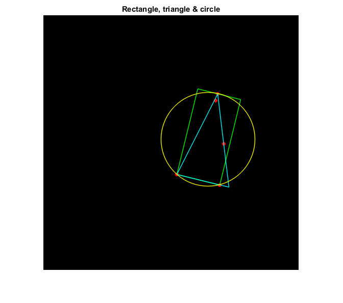

Minimum Area Enclosing
This program demonstrates finding the minimum enclosing box, triangle or circle of a set of points using functions: cv.minAreaRect, cv.minEnclosingTriangle, and cv.minEnclosingCircle. Random points are generated and then enclosed.
Sources:
Contents
Points
% create black image img = zeros([500 500 3], 'uint8'); [h,w,~] = size(img); % generate random set of 2D points count = randi([5 100]); points = [randi(fix([w w*3]/4), [count 1]) randi(fix([h h*3]/4), [count 1])];
Minimum-area enclosing shapes
% find the minimum area enclosing bounding box box = cv.minAreaRect(points); vtx = cv.RotatedRect.points(box); % find the minimum area enclosing triangle triangle = cv.minEnclosingTriangle(points); triangle = cat(1, triangle{:}); % find the minimum area enclosing circle [center, radius] = cv.minEnclosingCircle(points);
Result
% draw the points for i=1:count img = cv.circle(img, points(i,:), 3, ... 'Color',[255 0 0], 'Thickness','Filled', 'LineType','AA'); end % draw the bounding box for i=1:4 img = cv.line(img, vtx(i,:), vtx(mod(i,4)+1,:), ... 'Color',[0 255 0], 'Thickness',1, 'LineType','AA'); end % draw the triangle for i=1:3 img = cv.line(img, triangle(i,:), triangle(mod(i,3)+1,:), ... 'Color',[0 255 255], 'Thickness',1, 'LineType','AA'); end % draw the circle img = cv.circle(img, center, round(radius), ... 'Color',[255 255 0], 'Thickness',1, 'LineType','AA'); % show output imshow(img), title('Rectangle, triangle & circle')